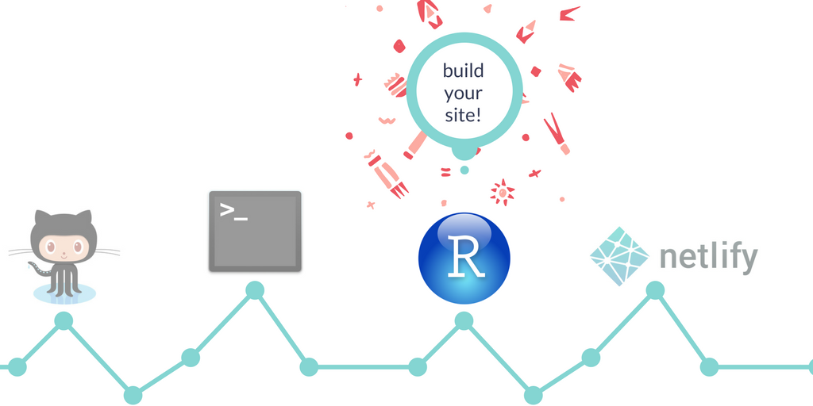

1 Introduction to Blogdown
The content below is taken from the excellent post “Up & Running with blogdown” from Alison Hill
Before you start, I recommend reading the following:
blogdown: Creating Websites with R Markdown by Yihui Xie and Amber Thomas
Also note that I am a macOS user, and I use R, RStudio, Git (usually via GitHub), and terminal regularly, so I’m assuming familiarity here with all of these. If that is not the case, here are some places to get started:
- For Git: Happy Git with R by Jenny Bryan et al.
- For RStudio: DataCamp’s Working with the RStudio IDE (free) by Garrett Grolemund
- For Terminal: The Command Line Murder Mystery by Noah Veltman, and The UNIX Workbench by Sean Kross
I also have Xcode and Homebrew installed- you will probably need these to download Hugo. If you don’t have either but are on a mac, this link may help:
Introduction to static site generators and how domain names work:
2 GitHub

Go online to your GitHub account, and create a new repository (check to initialize with a
READMEbut don’t add.gitignore- this will be taken care of later). For naming your repo, consider your future deployment plan:- If you are going to use Netlify to host the site, you can name this repository anything you want!
You can see some of the repo names used by members of the rbind organization here.
- If you want to host your site as a GitHub Page, you should name your repository
yourgithubusername.github.io.
- If you are going to use Netlify to host the site, you can name this repository anything you want!
Screenshot above: Creating a new repository in GitHub
Go to the main page of your new repository, and under the repository name, click the green Clone or download button.
In the Clone with HTTPs section, click on the clipboard icon to copy the clone URL for your new repository. You’ll paste this text into terminal in the next section.
3 Terminal or GitHub Desktop

Now you will clone your remote repository and create a local copy on your computer so you can sync between the two locations (using terminal or your alternative command line tool for a Windows machine). However, I recommend to use GitHub Desktop instead of the terminal for the cloning process. If you instead would like to use the terminal, this is how you proceed:
Use
cdto navigate into the directory where you want your repo to beOnce there, type:
git clone [paste]. So my command looked like this:
git clone https://github.com/apreshill/apreshill.gitAnd this is what printed to the terminal window:
Cloning into 'apreshill'...
remote: Counting objects: 3, done.
remote: Compressing objects: 100% (2/2), done.
remote: Total 3 (delta 0), reused 0 (delta 0), pack-reused 0
Unpacking objects: 100% (3/3), done.
Checking connectivity... done.- Close terminal, you are done in there.
4 RStudio

- Install
blogdownfrom your RStudio console. If you already havedevtoolsinstalled like I did, you can just use the second line below:
if (!requireNamespace("devtools")) install.packages("devtools")
devtools::install_github("rstudio/blogdown")- Install Hugo using the
blogdownpackage helper function:
blogdown::install_hugo()
# or
library(blogdown)
install_hugo()- Use the top menu buttons in RStudio to select
File -> New Project -> Existing Directory, then browse to the directory on your computer where your GitHub repo is and click on the Create Project button.

Screenshot above: Creating a new project in an existing directory in RStudio
- Now you should be “in” your project in RStudio. If you are using git for version control, edit your
*gitignorefile. This file should be viewable in your file viewer pane in RStudio. Below is what it should look like: the first four lines will automatically be in this file if you have set up your RStudio Project, but if you plan to use Netlify to deploy, you need to add thepublic/line (read about here.)
.Rproj.user
.Rhistory
.RData
.Ruserdata
blogdown
.DS_Store # if a windows user, Thumbs.db instead
public/ # if using Netlify5 Build your site in RStudio

Now you can finally build your site using the blogdown::new_site() function. But first you should at least think about themes…
5.1 Picking a theme
There are over 90 Hugo themes. Here you can find an overview of some of the themes. Whatever theme you choose, you’ll need to pick one of 3 ways to make your new site:
- If you are happy with the default theme, which is the lithium theme, you can use:
blogdown::new_site() # default theme is lithium- If you want a theme other than the default, you can specify the theme at the same time as you call the
new_sitefunction:
# for example, create a new site with the academic theme
blogdown::new_site(theme = "gcushen/hugo-academic", theme_example = TRUE)- If instead you want to add the theme later, you can do this:
library(blogdown)
new_site() # default theme is lithium
# need to stop serving so can use the console again
install_theme("gcushen/hugo-academic", theme_example = TRUE, update_config = TRUE)5.2 Update project options
In your project in RStudio, go to the top menu bar of RStudio and select Tools -> Project Options and update following Yihui and Amber’s instructions.
5.3 Edit your configurations
Relevant reading:
blogdownbook chapter on configuration- You can also view Alison Hill’s
config.tomlfile in GitHub
Now, edit the baseurl in your config.toml file. The URL should always end with a / trailing slash. At this point, you probably haven’t deployed your site yet, so to view it locally you can use the Serve Site add-in, or run the blogdown::serve_site function. Both of these baseurls worked for me when viewing locally:
baseurl = "https://example.com/"
baseurl = "/"Go ahead and edit all the other elements in the config.toml file now as you please- this is how you personalize your site.
5.4 Addins & workflow
Relevant reading:
Addins: use them- you won’t need the blogdown library loaded in the console if you use the Addins. The workflow in RStudio at this point (again, just viewing locally because we haven’t deployed yet) works best like this:
- Open the RStudio project for the site
- Use the Serve Site add-in (only once due to LiveReload)
- View site in the RStudio viewer pane, and open in a new browser window while you work
- Select existing files to edit using the file pane in RStudio
- After making changes, click the save button (don’t
knit!)- the console will reload, the viewer pane will update, and if you hit refresh in the browser your local view will also be updated - When happy with changes, add/commit/push changes to GitHub
Having blogdown::serve_site running locally with LiveReload is especially useful as you can immediately see if you have made any mistakes.
The above workflow is only for editing existing files or posts, but not for creating new posts. For that, read on…
5.5 Posting
Relevant reading:
blogdownbook chapter on RStudio IDEblogdownbook chapter on output formats: on .md versus .Rmd posts
Bottom line:
Use the New Post addin. But, you need the console to do this, so you have to stop blogdown::serve_site by clicking on the red Stop button first. The Addin is a Shiny interface that runs this code in your console: blogdown:::new_post_addin(). So, your console needs to be unblocked for it to run. You also need to be “in” your RStudio project or it won’t work.
5.5.1 Draft posts
Relevant reading:
Whether you do a markdown or R Markdown post (see below), you should know that in the YAML front matter of your new file, you can add draft: TRUE and you will be able to preview your post using blogdown::serve_site(), but conveniently your post will not show up on your deployed site until you set it to false. Because this is a function built into Hugo, all posts (draft or not) will still end up in your GitHub repo though.
5.5.2 New markdown posts
Pick one of 2 methods:
- Use the New Post addin and with the radio button at the bottom select Format: Markdown (recommended)
- Use the console to author a new
.mdpost:
blogdown::new_post()
blogdown::new_post(ext = '.md') # md is the default!Here are the ?new_post arguments:
new_post(title, kind = "", open = interactive(),
author = getOption("blogdown.author"), categories = NULL, tags = NULL,
date = Sys.Date(), file = NULL, slug = NULL,
title_case = getOption("blogdown.title_case"),
subdir = getOption("blogdown.subdir", "post"),
ext = getOption("blogdown.ext", ".md"))5.5.3 New R Markdown (.Rmd) posts
Again, you have your choice of one of 2 methods:
- Use the New Post addin and with the radio button at the bottom select Format: R Markdown (.Rmd) (recommended)
- Use the console to author a new
.Rmdpost:
blogdown::new_post(ext = '.Rmd') # md is the default!After you edit your .Rmd post, in addition to saving the changes in your .Rmd file, you must use blogdown::serve_site- this is how the output html file needs to be generated.
Ultimately, your YAML front matter looks something like this; note that some but not all features of rmarkdown::html_document are supported in blogdown:
---
title: "My Post"
author: "John Doe"
date: "2017-02-14"
output:
blogdown::html_page:
toc: true
toc_depth: 1
number_sections: true
fig_width: 6
---5.5.4 Adding images to a post
If you want to include an image that is not a figure created from an R chunk, the recommended method is to:
- Add the image to your
/static/img/folder, then - Reference the image using the relative file path as follows:
6 Deploy in Netlify

Deploying in Netlify through GitHub is smooth. Here are some beginner instructions, but Netlify is so easy, I recommend that you skip dragging your public folder in and instead automate the process through GitHub.
- When you are ready to deploy, commit your changes and push to GitHub, then go online to Netlify.
- Click on the Sign Up button and sign up using your existing GitHub account (no need to create another account)
- Log in, and select:
New site from Git -> Continuous Deployment: GitHub. From there, Netlify will allow you to select from your existing GitHub repositories. You’ll pick the repo you’ve been working from with
blogdown, then you’ll configure your build. This involves specifying two important things: the build command and the publish directory (this should bepublic).- More about the build command from Netlify: “For Hugo hosting,
hugowill build and deploy with the version 0.17 ofhugo. You can specify a specifichugorelease like this:hugo_0.15. Currently0.13,0.14,0.15,0.16,0.17,0.18and0.19are supported. For version0.20and above, you’ll need to create a Build environment variable calledHUGO_VERSIONand set it to the version of your choice.” I opted for the former, and specifiedhugo_0.19.
- More about the build command from Netlify: “For Hugo hosting,
You can check your hugo version in terminal using the command hugo version. This is what my output looked like, so I could run version 0.20 if I wanted to through Netlify, but I went with 0.19 and it works just fine.
$ hugo version
Hugo Static Site Generator v0.20.7 darwin/amd64 BuildDate: 2017-05-08T18:37:40-07:00Screenshot above: Basic build settings in Netlify
Netlify will deploy your site and assign you a random subdomain name of the form random-word-12345.netlify.com. You should know that you can change this; e.g. to mynewsite.netlify.com.
At this point, you should be up and running with blogdown, GitHub, and Netlify, but here are some ideas if you want to go further…
7 Going further
7.1 Custom CSS
Every Hugo theme is structured a little differently, but if you are interested, you can check out Alison Hill’s custom css to see how she customized the academic theme, which provides a way to link to a custom CSS file in the config.toml file:
# Link custom CSS and JS assets
# (relative to /static/css and /static/js respectively)
custom_css = ["blue.css"]7.2 Formspree
Alison Hill used Formspree to make a contact form, which is an online service (managed on GitHub) that allows you to add an HTML form to your static site. No registration, just use the form and confirm your email address once. She added the following code into the contact widget:
<form action="https://formspree.io/your@email.com" method="POST">
<label for="name">Your name: </label>
<input type="text" name="name" required="required" placeholder="here"><br>
<label for="email">Your email: </label>
<input type="email" name="_replyto" required="required" placeholder="here"><br>
<label for="message">Your message:</label><br>
<textarea rows="4" name="message" id="message" required="required" class="form-control" placeholder="I can't wait to read this!"></textarea>
<input type="hidden" name="_next" value="/html/thanks.html" />
<input type="submit" value="Send" name="submit" class="btn btn-primary btn-outline">
<input type="hidden" name="_subject" value="Website message" />
<input type="text" name="_gotcha" style="display:none" />
</form>7.3 *.rbind.io domain names
You may want a different domain name than the one provided by Netlify. Alison opted for a free subdomain *.rbind.io offered by RStudio. To do the same, head over to the rbind/support GitHub page and open a new issue. All you need to do is let them know what your Netlify subdomain name is (*.netlify.com), and what you want your subdomain name to be (*.rbind.io). The rbind support team will help you take it from there!
That’s it!